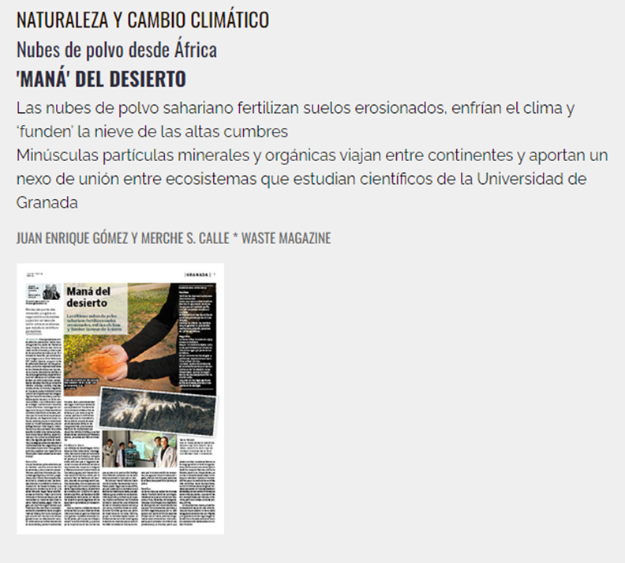
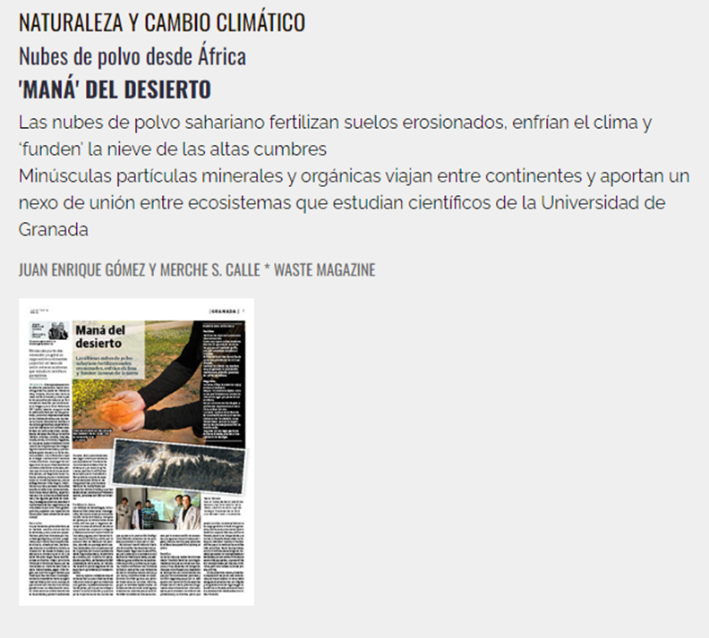

El polvo del Sahara
|  |
En el siguiente artículo descubriras la importancia de los sedimenentos no solo como formadores de rocas sedimentarias, sino como implicados en procesos ambientales. |
|  |
En el siguiente artículo descubriras la importancia de los sedimenentos no solo como formadores de rocas sedimentarias, sino como implicados en procesos ambientales. |
Obra publicada con Licencia Creative Commons Reconocimiento Compartir igual 4.0